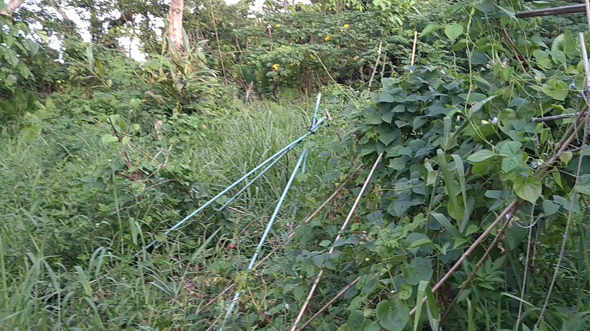

自然農を始めたのは2017年。今年2026年で9年目になる。
自然農といっても、最初から順調だったわけではない。草の扱い方、作物の選び方、支柱の作り方など、毎年さまざまな失敗を繰り返しながら、少しずつ技術を改善してきた。
9年目となる2026年は、これまで長年悩まされてきた夏草への対処に大きな進展があった。また、ミニトマト、ショウガ、シカクマメなど、この畑に適した作物も見えてきた。
一方で、支柱の強度、サツマイモやナスの栽培、冬野菜の品種選びなど、まだ多くの課題が残されている。
2026年は大量収穫を達成した年というより、今後の安定栽培と生産拡大につながる基礎技術が整い始めた年だと感じている。
2025年まで最大の問題だった夏草
沖縄の夏草の勢いはすさまじい。
2025年までは、夏になると毎年のように畑の大部分が草に覆われていた。ミニトマト、ゴーヤ、ショウガなども、草の中に埋もれるようにして生えていた。
草刈機も使っていたが、作物と草が入り交じった自然農の畑では、草だけを選んで刈ることが難しい。
支柱やツルが増えるほど草刈機を入れにくくなり、作物を誤って切ってしまう危険もある。地面をはうサツマイモや、自生したミニトマトの苗がある場所では、特に使いにくかった。
カマを使ったり、草を足で踏み倒したりする方法も試した。しかし、夏草の成長速度に作業が追いつかず、十分に整理できた範囲は、畑全体の1割から2割ほどだったと思う。
そのような状態でも、草をある程度整理できた場所では、ショウガを比較的よい状態で収穫できた。
この経験から、自然農では草を完全に排除する必要はないものの、作物が埋もれるほど放置してよいわけでもないことが分かった。
自然農における草との共生とは、草をそのままにしておくことではなく、作物が生きられるように草の勢力を調整することなのだと思う。
刈りバサミによって草整理が大きく前進
2026年になって本格的に活用し始めたのが、刈りバサミである。
刈りバサミ自体は珍しい道具ではない。しかし、作物と草が混在する自然農の畑では、非常に使いやすいことに気付いた。
草刈機のように広範囲を一気に処理することはできないが、作物の近くにある草だけを選んで切ることができる。ミニトマトの自生苗や、草の中に隠れているショウガを残しながら、周囲の草だけを整理できる。
刈った草はその場に敷き、草マルチとして利用できる。草を根から抜かないため、地表を裸にせず、土の乾燥や流出も抑えられる。
2026年の夏草も非常に激しいが、現在までに畑全体の約7割を整理できている。
以前は1割から2割程度しか手が回らなかったので、大きな進歩である。
これは単に畑が見やすくなったというだけではない。
これまでは作物が草に埋もれていたため、育たなかった原因が、土にあるのか、品種にあるのか、それとも単純に草に負けたためなのか判別しにくかった。
草をある程度管理できるようになったことで、今後は作物ごとの性質や自然農への適性を、より正確に観察できるようになる。
2026年は、長年続いていた草整理の問題に、一つの解決の道が見えてきた年と言える。
ミニトマトに大量生産の道が見えてきた
2026年の大きな成果の一つが、ミニトマトである。
長年栽培を続ける中で、私の畑の気候や土、草との共存環境に合った品種を見つけることができた。
毎年、冬の終わりごろになると、前年に落ちた実や種から自然にミニトマトが発芽する。発芽した苗は、そのまま畑の中で勝手に育っていく。
育ちのよい苗を見つけたら、栽培に適した場所へ移植する。
もちろん、すべてを自然任せにしているわけではない。特によく育った株や、実付きのよかった株からは種を自家採取し、次の年へつないでいる。
自然発芽と自家採種の両方を続けることで、畑の環境に適応したミニトマトが少しずつ選ばれてきた可能性がある。
現在のミニトマトは育ちが非常によく、多くの実を収穫できる状態になっている。
苗を毎年購入しなくても、自然に発芽した苗を活用できることも大きな利点である。多数の苗を確保しやすいため、栽培面積を増やすことも難しくない。
ショウガと並び、ミニトマトは今後の大量生産を考えるうえで、最も有力な野菜の一つになっている。
ただし、株数が増えるほど、支柱への誘引作業が必要になる。
枝をどの方向へ伸ばすのか、どの程度剪定するのか、4脚支柱や架線へどのように固定するのかについては、まだ改善の余地がある。
誘引方法を簡略化し、多数の株を少ない作業量で管理できるようになれば、販売や出荷も近いうちに実現できるかもしれない。
自然農で育てた、この土地に適応したミニトマトとして、将来的には生果だけでなく、ドライトマトなどへの加工も検討できそうである。
ショウガは安定収穫が期待できる作物
これまでの経験から、ショウガは自然農でも比較的安定して育てられる作物だと感じている。
年に一度の収穫になるが、草の中でもある程度は生き残る。毎年収穫できることを確認しつつあり、現在の畑では再現性の高い作物の一つである。
ただし、ショウガが草に強いからといって、完全に放置できるわけではない。
草の量が極端に多くなり、葉が覆われて光が届かなくなると、ショウガも負けてしまう。
草に強いというより、ほかの野菜よりも、草との競争に耐えられる期間が長いと考えた方がよさそうだ。
ある程度の草整理を行った場所では良好な収穫ができたため、ショウガについては、夏草が葉を完全に覆う前に周囲を刈ることが重要だと考えている。
ミニトマトが地上空間を利用する作物だとすれば、ショウガは草の下や半日陰も利用できる作物である。この性質の違いを生かせば、畑を立体的に使える可能性もある。
今後は、植え付け後、梅雨明け、夏草の最盛期など、草整理の時期と回数を記録し、より安定した栽培方法を探っていきたい。
ミニトマトとショウガは、現時点で大量生産の可能性が最も高い二つの作物である。
シカクマメも畑に適している
シカクマメも、私の畑の環境にかなり適している。
沖縄の暑さに強く、夏になるとツルを勢いよく伸ばす。草やほかの植物に絡みながら成長する姿を見ると、自然農や協生的な栽培との相性はよいと感じる。
ゴーヤと近くに植えた場合も、完全に一方が他方を押しのけるというより、同じ支柱空間を利用しながら育っている。
ゴーヤとの組み合わせは、作物同士がうまく協生しているように見える点も興味深い。
ただし、シカクマメでは毎年のように支柱で失敗している。
ツルの成長が非常に旺盛で、葉や枝の重みも大きくなる。支柱の数や強度が不足すると、途中で傾いたり、台風で倒れたりする。
作物そのものはよく育つのに、それを支える設備が追いついていない状態である。
逆に言えば、十分な数と強度を持つ支柱を用意できれば、大量収穫できる可能性は高い。
4脚支柱と2本の架線を組み合わせた構造が完成すれば、シカクマメを多数育てるための有力な方法になるだろう。
シカクマメも、ミニトマトやショウガと同様に、将来的な販売や出荷の候補となる野菜である。
現在の課題は栽培そのものよりも、ツルを受け止める支柱構造の完成にある。

4脚支柱によって開けた大量栽培への道
自然農では、ツル植物をどのように支えるかが大きな問題になる。
ゴーヤ、シカクマメ、ミニトマトなどを増やすには、多くの支柱が必要になる。しかし、従来の支柱は設置に時間がかかり、畑全体へ数を増やすことが難しかった。
そこで使い始めたのが、4本の竹や支柱を組み合わせた4脚支柱である。
4脚支柱は比較的短時間で設置でき、単独でも立たせることができる。この方法によって、畑に設置できる支柱の数を大幅に増やせるようになった。
それまで数本しか育てられなかったツル植物を、より多く栽培できる可能性が見えてきた。
自然農でも、ある程度まとまった量を生産する道が開けたように感じた。
一方で、台風に弱いという問題も明らかになった。
通常の風には耐えられても、ツルや葉が繁茂すると、植物全体が風を受ける帆のようになる。その状態で台風が来ると、4脚支柱ごと倒れてしまう。
特にシカクマメやゴーヤのように大量のツルと葉を付ける作物では、支柱にかかる重みと風圧が非常に大きくなる。
4脚支柱は設置の速さでは優れているが、単独ですべてを支える構造としては弱い。この弱点をどのように補うかが、現在の大きな課題である。
4脚支柱と2本架線の組み合わせ
現在は、4脚支柱と架線方式を組み合わせる実験を行っている。
架線方式そのものは、数年前にも試したことがある。
当時は4脚支柱の発想がなく、大きな杭を地面に埋めたり、木材を釘で組み合わせたりして構造物を作っていた。そのため、設置に莫大な時間と労力がかかった。
ようやく完成しても、台風やツル植物の重みによって壊れることがあり、作業量に対して十分な成果が得られなかった。
現在の方法では、短時間で設置できる4脚支柱を複数配置し、それらを2本の架線でつなぐ。
架線を2本にすることで、ツルを誘引する場所を増やしたり、支柱の横揺れを抑えたりすることができる。
上の線を構造補強と主な誘引用に使い、下の線をツルの固定や横方向への広がりに使う方法も考えられる。
個々の4脚支柱だけを強くするのではなく、複数の支柱を架線で連結し、風や植物の重みを全体へ分散させる考え方である。
ただし、架線で全体をつなぐと、一つの支柱が倒れた際に、ほかの支柱まで引っ張られる危険もある。
端部の固定方法、架線の張力、支柱同士の間隔、一つの区画をどの程度の長さにするかなどは、今後さらに検証する必要がある。
この方式が完成すれば、ミニトマト、ゴーヤ、シカクマメを大量に育てるための共通設備として利用できる。
4脚支柱と2本架線は、設置の簡単さと大量栽培を両立させるための重要な技術になりそうである。
サツマイモは今後の大きな課題
サツマイモは丈夫で、やせた土地でも育つ作物という印象がある。
しかし、私の自然農では、これまでまともな収穫ができていない。現在も重要な課題の一つとなっている。
原因としては、夏草による日照不足、土の硬さ、植え付け時期、水分量、ツルの管理、イノシシによる被害などが考えられる。
サツマイモはツルが地表を覆うまで成長すれば強いが、植え付け直後から初期成長の段階では、草に負けやすいのかもしれない。
また、地上部のツルや葉がよく育っていても、地下の芋が大きくなるとは限らない。草の根との競争や、ツルの途中から発根することによる栄養の分散なども考える必要がある。
今後は、草を多く残す区画と、サツマイモの周囲を強めに整理する区画を分けて比較したい。
土を少し高くした場所、柔らかくした場所、ヒューゲルカルチャーを行った場所などでも育て、どの条件で芋が肥大するかを確認する必要がある。
サツマイモは栽培面積を広げやすく、保存性も高いため、安定収穫の方法を見つけられれば重要な作物になる。
2026年のゴーヤは不作気味
2026年のゴーヤは、夏前半の時点では不作気味である。
株の勢い、花の付き方、実の数などが、期待したほど伸びていない。
ただし、夏前半が不調だったからといって、年間を通して不作になるとは限らない。
沖縄では真夏の極端な高温や乾燥、降雨、台風などによって、時期ごとに生育が大きく変化する。
気温が少し下がる夏後半から秋にかけて、再び成長が活発になり、実を付ける可能性もある。
今後は、株そのものが弱っているのか、それとも花や受粉の問題によって実が少ないのかを観察したい。
雄花と雌花の数、小さな実が途中で落ちていないか、葉の色やツルの伸び方などを記録することで、不作の原因が少しずつ見えてくるだろう。
シカクマメと同じ支柱で育てる場合、両方のツルが過密にならないようにする必要もある。
ゴーヤとシカクマメの協生状態には可能性を感じているが、どの程度の株数や間隔が適切なのかは、さらに観察したい。
ナスは成功条件を再現できていない
ナスは、現在の自然農では全体的に厳しい作物である。
以前、大量に収穫できた年もあった。しかし、その成功を再現できていない。
一度でも大量に収穫できたことがあるため、この土地や気候に全く合わないわけではないと思う。何らかの条件が偶然そろったことで、よく育った可能性が高い。
ナスは草との競争だけでなく、水分不足、土の状態、害虫、風、極端な高温などの影響を受けやすいように感じる。
ショウガのように、ある程度草の中へ植えておけば毎年育つ作物ではない。自然農であっても、ナスにはほかの作物より丁寧な管理が必要なのかもしれない。
今後は大量に植えるのではなく、数株に絞って重点的に観察したい。
植え付け時期、草整理の範囲、水分、以前よく収穫できた場所の土や植生などを比較し、成功した条件を探る必要がある。
冬は比較的さまざまな野菜が育つ
夏は草、高温、台風との戦いになるが、沖縄の冬は比較的穏やかで、さまざまな野菜を育てやすい。
夏には難しい葉物や根菜なども、冬であれば比較的よく育つ。
そのため、現在も特定の野菜だけに絞らず、いろいろな種類を試している。
自然農では一般的に育てやすいとされる作物であっても、私の畑ではうまくいかないことがある。一方で、特別な管理をしなくてもよく育つ作物もある。
作物名だけで適性を判断するのではなく、品種と畑との相性まで見る必要があると感じている。
ジャガイモは沖縄では難しさを感じる
冬作の中では、ジャガイモに力を入れている。
ジャガイモは収穫量が多く、保存や料理にも使いやすいため、安定して栽培できれば非常に有用な作物である。
しかし、これまで育てた感触では、沖縄の気候にはあまり向いていないようにも感じる。
気温が高くなりやすく、生育に適した涼しい期間が短い。植え付け時期が少しずれるだけでも、十分に育つ前に気温が上がってしまう可能性がある。
雨が多い時期には、種芋や地下部分の腐敗も心配になる。
それでも、品種や植え付け時期によっては、沖縄でも十分に収穫できる可能性がある。
今後は早生品種や暖地向きの品種を試し、植え付け時期、土の深さ、水はけなどを比較したい。
ジャガイモについては、畑に適した品種と短い栽培期間を見つけることが課題である。
ダイコンも品種選びが重要
ダイコンも、意外に難しいと感じている作物の一つである。
冬は比較的育てやすいものの、きれいな形の大きなダイコンを安定して収穫するところまでは至っていない。
土が硬い場所や、木の根、石などが多い場所では、根が分かれたり、曲がったりしやすい。
自然農では不耕起を基本としているため、一般的な畑のように深く耕して柔らかい土を作ることはしない。そのため、長くまっすぐ伸びる品種よりも、短く太る品種の方が合っている可能性がある。
また、沖縄の気温や日長に適した品種を選ぶ必要もある。
今後は短根系、ミニダイコン、暖地向きの品種などを試し、私の畑でも安定して育つ品種を見つけたい。
ジャガイモやダイコンは、作物そのものが不向きというより、現在使っている品種や植え付け時期が畑に合っていない可能性もある。
ミニトマトで畑に合った品種を見つけられたように、冬野菜でも相性のよい品種を探すことが重要だと思う。
ヒューゲルカルチャーという長期実験
2026年から、穴を掘って木の枝や丸太を埋めるヒューゲルカルチャーも始めている。
畑や周辺で出た木の枝、丸太、段ボールなどの紙系資材を、継続的に土の中へ埋めている。
木質物はすぐに土へ変わるわけではない。分解には長い時間がかかるため、実験結果がはっきりするのは数年先になるだろう。
それでも、木や枝が徐々に分解されれば、土の中に空間ができ、水分を保ちやすくなる可能性がある。菌類や土壌生物の活動場所となり、長期的には腐植を増やすことにもつながるかもしれない。
沖縄では強い雨が降る一方、晴天が続くと土が乾燥する。木質物が水分を蓄える働きをすれば、乾燥への対策としても役立つ可能性がある。
また、サツマイモ、ダイコン、ジャガイモなど、地下部を収穫する作物にどのような影響が出るのかも興味深い。
一方で、埋めたばかりの木質物は、分解の過程で作物の生育へ影響を与えることも考えられる。
どの作物と相性がよいのか、施工直後と数年後でどのような違いが出るのかを、長期的に観察したい。
紙系資材についても、何でも埋めるのではなく、無地の段ボールや加工の少ない紙を中心にする必要がある。光沢紙、感熱紙、樹脂加工された紙、テープや金属が付いたものは避けた方がよいだろう。
9年間で自然農に対する考え方が変わった
自然農を始めた当初は、自然に任せれば作物も自然に育つという期待があった。
しかし、沖縄の土地をそのまま放置すれば、最も勢いの強い夏草が畑を占有する。
野菜も植物ではあるが、その土地に昔から生えている野草との競争に、必ず勝てるわけではない。
自然農は、何もしない農法ではなかった。
草をすべて排除する必要はないが、作物が光を受けられるように草を刈る必要がある。ツル植物が空間を使えるように支柱を立てる必要がある。台風が来る土地では、風に耐えられる構造も考えなければならない。
また、どの野菜でも同じように育つわけではない。
ミニトマトのように、自家採種と自然発芽を繰り返すことで畑に適応してきたと考えられる野菜もある。
ショウガのように、草の中でもある程度耐え、毎年安定して収穫できる野菜もある。
シカクマメのように、作物自体はよく育つものの、支柱設備が収穫量を制限している野菜もある。
一方で、サツマイモ、ナス、ジャガイモ、ダイコンのように、栽培方法や品種の選択に課題が残っている野菜もある。
自然の力だけに任せるのではなく、自然の動きを観察しながら、人が必要な部分だけを補助する。
現在では、そのような考え方へ変わってきた。
2026年は自然農の転換点
2026年の最大の成果は、収穫量そのものだけではなく、自然農を継続的に管理するための基礎技術が見えてきたことである。
刈りバサミの活用によって、草を整理できる範囲が、畑全体の1割から2割程度から約7割へ増えた。
4脚支柱によって、短時間で多くの支柱を設置できるようになった。
さらに、4脚支柱と2本架線を組み合わせることで、以前は設置に莫大な時間がかかっていた架線方式を、より簡単に作れる可能性が出てきた。
作物についても、今後の主力候補が明確になりつつある。
ミニトマトは、畑に合った品種を見つけ、自生苗と自家採種によって多数の株を確保できるようになった。育ちもよく、大量生産、販売、出荷への道が見え始めている。
ショウガは、適度に草を管理すれば、毎年比較的安定した収穫を期待できる。
シカクマメも畑への適性が高く、十分な支柱を用意できれば、大量収穫と販売を目指せる可能性がある。
一方、サツマイモでは、まだ十分な収穫を実現できていない。ゴーヤは2026年の夏前半では不作気味であり、後半の生育を見守る必要がある。
ナスは過去の成功を再現できず、ジャガイモとダイコンについても、沖縄の気候や畑に合った品種と栽培時期を探す必要がある。
ヒューゲルカルチャーについても、結果が出るのはまだ先である。
今後の課題
今後、特に取り組みたい課題は五つある。
第一に、刈りバサミによる草整理を、一時的な成功で終わらせず、毎年継続できる作業方法として定着させることである。
畑全体を一度に整理しようとすると負担が大きい。畑をいくつかの区画に分け、草が作物を覆う前に順番に刈る方法を作りたい。
第二に、4脚支柱と2本架線を、台風に耐えられる構造へ改善することである。
端部の固定、支柱の間隔、架線の高さ、2本の線の役割、一つの区画の長さなどを試しながら、設置の簡単さと強度の両立を目指したい。
第三に、ミニトマトとシカクマメの誘引方法を簡略化することである。
大量生産を考える場合、一本一本を細かく誘引していては作業量が大きくなる。多少枝が自由に広がっても収穫でき、台風時にも大きな被害を受けない仕組みを作る必要がある。
第四に、作物ごとの成功条件を記録することである。
ショウガについては、草整理の回数や時期と収穫量の関係を調べたい。
サツマイモでは、土の硬さ、草の量、植え付け方法などを比較したい。
ゴーヤでは夏前半と後半の違いを観察し、ナスでは過去に成功した条件を探りたい。
ジャガイモとダイコンについては、品種と植え付け時期の比較を進めたい。
第五に、ヒューゲルカルチャーの施工場所を記録し、施工していない場所との違いを数年かけて観察することである。
おわりに
自然農を始めて9年目になったが、完成したという感覚はない。
むしろ、9年続けたことで、ようやく何が難しいのか、どこを改善すればよいのか、どの作物がこの土地に合っているのかが見えるようになってきた。
毎年、夏草に覆われて手が付けられなかった畑が、2026年には刈りバサミによって7割ほど整理できるようになった。この変化は大きい。
ミニトマトは、自然発芽と自家採種によって、この畑に適応した有望な野菜になった。
ショウガは安定収穫の可能性が高まり、シカクマメも支柱の問題を解決できれば、大量収穫を目指せる。
これら三つは、将来的な販売や出荷を考えられる作物になりつつある。
自然農では、作物を植える技術だけでなく、草をどのように調整するか、支柱をどのように短時間で設置するか、台風にどう備えるか、畑に合う品種をどう選び残していくかといった周辺技術も重要である。
現在の私の自然農は、草をなくす農法ではない。
草の勢いを刈りバサミで調整し、4脚支柱と架線によって作物が育つ立体的な空間を作り、自家採種や品種比較を通して、この土地に合った野菜を見極めていく農法である。
2026年は、大量収穫を達成した年というよりも、今後の安定栽培、生産拡大、販売へ向けた基礎が整い始めた年として記録されるだろう。
自然農9年目は、これまで蓄積してきた経験が、ようやく一つの技術体系として結び付き始めた一年である。